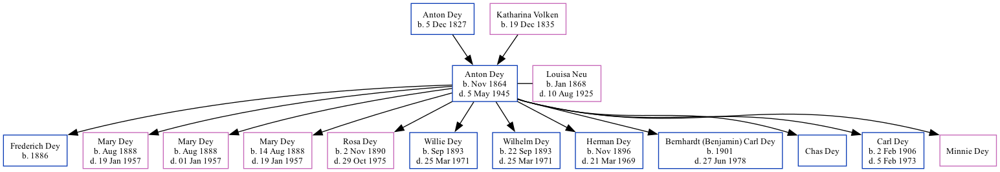

Anton Dey 1864 - 1945
[ Home ] | [ Surnames Index ] | [ Family History ]The eldest of 4 children of Anton Dey and Katharina Volken, , Anton was the great-great-grandfather of Stephanie Hardesty (née Teten), was born in Germany in Nov 18641,2 and married Louisa Neu (with whom he had 12 children: Frederich, Mary, Mary, Mary Catherine, Rosa Johanna, Willie, Wilhelm, Herman, Bernhardt (Benjamin) Carl, Chas, Carl Antone and Minnie) in Seward, Seward County, Nebraska in 18851.
During his life, he was living in D Precinct, Seward, Nebraska in 19001; and in Precinct D, Seward, Nebraska in 19102. He arrived in 1875.
He died on May 5, 1945 in Ingleside, Adams County, Nebraska.
Parents
- Anton D was born on Dec 5, 1827
- Katharina Elizabeth was born on Dec 19, 1835
Children
- Frederich was born in 1886
- Mary was born in Aug 1888
- Mary was born in Aug 1888
- Mary Catherine was born on Aug 14, 1888
- Rosa Johanna was born on Nov 2, 1890
- Willie was born in Sep 1893
- Wilhelm was born on Sep 22, 1893
- Herman was born in Nov 1896
- Bernhardt (Benjamin) Carl was born in 1901
- Chas
- Carl Antone was born on Feb 2, 1906
Citations
- 1900 United States Federal Census Ancestry.com Operations Inc (Age: 35; Marital Status: Married; Relation to Head of House: Head)
- 1910 United States Federal Census Ancestry.com Operations Inc (Age in 1910: 45; Marital Status: Married; Relation to Head of House: Head)
Family Tree
Data (GEDCOM) maintained by Jay Weston Hannah, Omaha, Nebraska, USA.
Website generated by ged2site. Last updated on Jun 18, 2024.